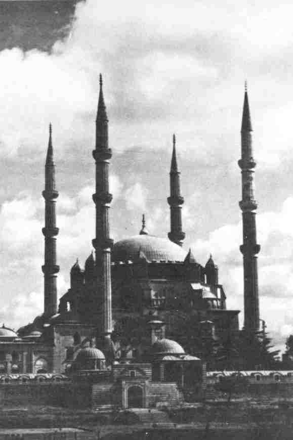
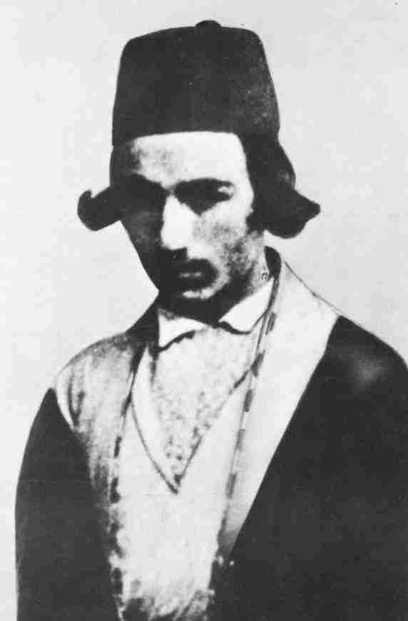

Súriy-i-MulúkThe unprecedented outpouring of the Revelation of Bahá'u'lláh which took place immediately after the downfall of Mírzá Yahyá reached its climax with the revelation of the Súriy-i-Mulúk (Súrih of Kings). This most momentous of the Tablets of Bahá'u'lláh is chiefly addressed to the kings of the world collectively. Revealed in Arabic, it proclaims in unequivocal terms the claims of its Author and His station in language of might and power.* To a sincere and unbiased observer, the opening paragraph alone portrays the authority and majesty of the One who announces Himself as the Vicegerent of God on earth and summons the kings and rulers of the world to renounce their possessions and embrace His Cause:
O Kings of the earth! Give ear unto the Voice of God, calling from this sublime, this fruit-laden Tree, that hath sprung out of the Crimson Hill, upon the holy Plain, intoning the words: 'There is none other God but He, the Mighty, the All-Powerful, the All-Wise.'...Fear God, O concourse of kings, and suffer not yourselves to be deprived of this most sublime grace. Fling away, then, the things ye possess, and take fast hold on the Handle of God, the Exalted, the Great. Set your hearts towards the Face of God, and abandon that which your desires have bidden you to follow, and be not of those who perish.1Bahá'u'lláh unveiled His station gradually and in stages. His |
* Shoghi Effendi, the Guardian of the Faith, has translated parts of this Tablet into English. They are found mainly in Gleanings from the Writings of Bahá'u'lláh, sections LXV, LXVI, CXIII, CXIV, CXVI, CXVIII and The Promised Day is Come, pp. 20-21.
1. Bahá'u'lláh, quoted by Shoghi Effendi, The Promised Day Is Come, p. 20. [Súriy-i-Mulúk] God Passes By, p. 161, p. 171, p. 172, p. 174, p. 175, p. 190, p. 206, p. 227, p. 316 |
|
Declaration took place in the Garden of Ridván in 1863.* On that historic occasion, which may be regarded as the initial stage of His announcement of the advent of the Day of God, He revealed the transcendent glory of His station to only a few of His Companions. Many of the Bábís who were assembled in that Garden to pay their last homage to Him on the day of His departure for Constantinople, had no knowledge of this declaration; they learnt of it months later. Mírzá Asadu'lláh-i-Káshání in his spoken chronicle mentions this fact. He was a self-appointed guard of Bahá'u'lláh in Baghdád, a devoted servant who against Bahá'u'lláh's advice and in spite of his very short stature, carried a dagger under his clothes and walked behind Him in public. This is how he describes Bahá'u'lláh's departure from the Garden of Ridván and the state of the believers left behind in Baghdád:
Although Bahá'u'lláh had commanded the friends not to follow them, I was so loath to let Him go out of my sight, that I ran after them for three hours. |
* See vol. 1, chapter 16. † These are not the exact words of Bahá'u'lláh, but convey the sense of what He said. (A.T.) |
|
of the 'Declaration', that our revered and beloved Bahá'u'lláh was He Who should come--'He Whom God shall make Manifest'--but we again felt that unspeakable joy, which surged within us, overcoming our bitter sorrow with a great and mysterious radiancy.2Mírzá Asadu'lláh then describes how after some time, one of the believers brought a Tablet from Adrianople and through it the friends in 'Iráq learnt of Bahá'u'lláh's well-being, His Declaration in the Garden of Ridván and His public proclamation in Adrianople. The second stage in the revealing of the station of Bahá'u'lláh was its announcement mainly to the members of the Bábí community, through the revelation of innumerable Tablets from Adrianople as well as the teaching exploits of some of His outstanding disciples. And now, the final stage was this majestic proclamation to the world at large through the kings and leaders who at that time wielded great power and, together with the ecclesiastical authorities, dominated the minds of their subjects. Centuries before, Muhammad had sent emissaries to rulers of some neighbouring lands announcing His mission and inviting them to embrace His Faith. Those whom Muslim historians have recorded as being addressed by Muhammad were the Sháh of Persia, the Negus of Ethiopia, the Emperor of Byzantium, the ruler of Egypt, the Governor of Damascus, and the Imám of Yamámah.* The Báb, who had addressed the 'concourse of kings and sons of kings' in His Qayyúmu'l-Asmá', and summoned them to deliver His Message to the peoples of the world, sent Tablets to only two monarchs of His day--Muhammad Sháh of Persia and Sultán 'Abdu'l-Majíd of Turkey. Bahá'u'lláh, the Supreme Manifestation of God whose |
* The names of these rulers are respectively as follows: Khusraw Parvíz (Chosroes II), Adjamih Abjur, Heraclius, Maqawqis, al-Hárith Ibn Abí-Shimr, and Hawdhah Ibn 'Alí.
2. Quoted by Lady Blomfield, The Chosen Highway, p. 123. |
|
|
mission was to unite the human race under one universal Faith, issued His clarion call to the kings of the world collectively, proclaimed His Message, summoned them to embrace His Cause, urged them to carry out His counsels and warned them of the dire consequences of disobeying His exhortations. The study of the Súriy-i-Mulúk and of His subsequent Tablets to individual crowned heads of the world, brings to light remarkable features of Bahá'u'lláh's indomitable spirit, His courage and His uncompromising attitude in revealing the Truth enshrined within His Revelation. Any man who, over a century ago, addressed the potentates and monarchs of the world, especially such despots as Násiri'd-Dín Sháh of Persia and Sultán 'Abdu'l-'Azíz of Turkey, needed to be a master in the art of diplomacy and to couch his words in such terms as to represent himself as a humble servant at their threshold. The pomp and majesty of the kings were so awesome that in most cases a stout-hearted man would feel inhibited to approach them or express his opinions, especially if they were not in conformity with those of the kings. No man of sound mind would have attempted, a hundred years ago, to address the kings in a language ringing with authority and command, especially if he were a prisoner captive in the hands of a despotic ruler. Who else but the Vicegerent of God on earth could have had such power and authority as to address the kings in the manner that Bahá'u'lláh would address them from 'Akká in the Kitáb-i-Aqdas:
O kings of the earth! He Who is the sovereign Lord of all is come. The Kingdom is God's, the omnipotent Protector, the Self-Subsisting. Worship none but God, and, with radiant hearts, lift up your faces unto your Lord, the Lord of all names. This is a Revelation to which whatever ye possess can never be compared, could ye but know it... |
["O kings of the earth..."] The Kitáb-i-Aqdas, ¶78; Gleanings From The Writings Of Bahá'u'lláh, CV; Prayers and Meditations, p. 36; The Revelation of Bahá'u'lláh, vol. 3 chapter 8 ["Ye are but vassals..."] The Kitáb-i-Aqdas, ¶82; Gleanings From The Writings Of Bahá'u'lláh, CV; The Revelation of Bahá'u'lláh, vol. 3 p. 148 |
This famous mosque in Adrianople was visited occasionally by Bahá'u'lláh |
The cook in the household of Bahá'u'lláh and one of his sincere followers |
Peril, the Self-Subsisting. Take heed lest pride deter you from recognizing the Source of Revelation, lest the things of this world shut you out as by a veil from Him Who is the Creator of heaven. Arise, and serve Him Who is the Desire of all nations, Who hath created you through a word from Him, and ordained you to be, for all time, the emblems of His sovereignty.3Some Important Themes of the Súriy-i-Mulúk The responsibility of the kings In the Súriy-i-Mulúk, Bahá'u'lláh admonishes the kings for their failure to heed the Message of the Báb. He addresses them in these words:
Relate unto them, O Servant,* the story of 'Alí (the Báb), when He came unto them with truth, bearing His glorious and weighty Book, and holding in His hands a testimony and proof from God, and holy and blessed tokens from Him. Ye, however, O kings, have failed to heed the Remembrance of God in His days and to be guided by the lights which arose and shone forth above the horizon of a resplendent Heaven. Ye examined not His Cause when so to do would have been better for you than all that the sun shineth upon, could ye but perceive it. Ye remained careless until the divines of Persia--those cruel ones--pronounced judgement against Him, and unjustly slew Him. His spirit ascended unto God, and the eyes of the inmates of Paradise and the angels that are nigh unto Him wept sore by reason of this cruelty. Beware that ye be not careless henceforth as ye have been careless aforetime. Return, then, unto God, your Maker, and be not of the heedless...4These words give us new insight into the fact that Bahá'u'lláh expected the kings, many of whom were uninformed of the Message of the Báb, to have investigated His claims and embraced His Cause. He does not entertain the thought that |
* Bahá'u'lláh. (A.T.)
3. Bahá'u'lláh, Gleanings from the Writings of Bahá'u'lláh, section cv. 4. Bahá'u'lláh, quoted by Shoghi Effendi, The Promised Day Is Come, pp. 20-21. |
|
|
most of them might have been unaware of His coming or unfamiliar with His claims. On the contrary, He rebukes them for their ignorance and reveals for them the verses of God regardless of the fact that most of them were unfamiliar with His terminology. In summoning them to His Cause, He did not alter His usual style and mode of expression to suit the understanding of His readers. Thus He wrote: 'Relate unto them, O Servant, the story of 'Alí when He came unto them with truth...' The kings ought to have known who 'Alí was. It is the duty of man to follow the Word of God, to understand it, and to educate himself through it. Since the disciples of Bahá'u'lláh achieved this, it is expected that all men, regardless of their background and knowledge--and this includes the kings--are capable of grasping the utterances of Bahá'u'lláh which constitute the Word of God for this age. Bahá'u'lláh further rebukes the kings for not having recognized His own Revelation. He admonishes them to turn to Him in these words:
My face hath come forth from the veils, and shed its radiance upon all that is in heaven and on earth; and yet, ye turned not towards Him, notwithstanding that ye were created for Him, O concourse of kings! Follow, therefore, that which I speak unto you, and hearken unto it with your hearts, and be not of such as have turned aside.5In another passage, Bahá'u'lláh reminds the kings of their failure to prevent the enemy from persecuting Him and His followers. He thus rebukes them:
Twenty years have passed, O kings, during which We have, each day, tasted the agony of a fresh tribulation. No one of them that were before Us hath endured the things We have endured. Would that ye could perceive it! They that rose up against Us have put us to death, have shed our blood, have plundered our property, and violated our honour. Though aware of most of our afflictions, ye, nevertheless, |
5. Bahá'u'lláh, quoted by Shoghi Effendi, The Promised Day Is Come, p. 21. |
|
have failed to stay the hand of the aggressor. For is it not your clear duty to restrain the tyranny of the oppressor, and to deal equitably with your subjects, that your high sense of justice may be fully demonstrated to all mankind?And again:
If ye stay not the hand of the oppressor, if ye fail to safeguard the rights of the downtrodden, what right have ye then to vaunt yourselves among men? What is it of which ye can rightly boast? Is it on your food and your drink that ye pride yourselves, on the riches ye lay up in your treasuries, on the diversity and the cost of the ornaments with which ye deck yourselves? If true glory were to consist in the possession of such perishable things, then the earth on which ye walk must needs vaunt itself over you, because it supplieth you, and bestoweth upon you, these very things, by the decree of the Almighty. In its bowels are contained, according to what God hath ordained, all that ye possess. From it, as a sign of His mercy, ye derive your riches. Behold then your state, the thing in which ye glory! Would that ye could perceive it! |
6. Bahá'u'lláh, Gleanings from the Writings of Bahá'u'lláh, section cxvi. 7. ibid., section cxviii. |
|
|
General counsels to the kings Some outstanding features of the Súriy-i-Mulúk are Bahá'u'lláh's counsels to the kings. He outlines for them those qualities which must adorn every crowned head. These are some of His exhortations:
Lay not aside the fear of God, O kings of the earth, and beware that ye transgress not the bounds which the Almighty hath fixed. Observe the injunctions laid upon you in His Book, and take good heed not to overstep their limits. Be vigilant, that ye may not do injustice to anyone, be it to the extent of a grain of mustard seed. Tread ye the path of justice, for this, verily, is the straight path. |
||
Ye will most certainly be called upon to answer for His trust on the day when the Balance of justice shall be set, the day when unto every one shall be rendered his due, when the doings of all men, be they rich or poor, shall be weighed.8The consequences of rejection Having counselled the rulers of the world, Bahá'u'lláh then issued an ominous warning:
If ye pay no heed unto the counsels which, in peerless and unequivocal language, We have revealed in this Tablet, Divine chastisement shall assail you from every direction, and the sentence of His justice shall be pronounced against you. On that day ye shall have no power to resist Him, and shall recognize your own impotence. Have mercy on yourselves and on those beneath you.9The call of Bahá'u'lláh and his summons to the kings fell on deaf ears. Consequently, mankind has increasingly experienced harrowing afflictions of war and the breakdown of order everywhere. The world has been plunged into such chaos and conflict that none may be found among its leaders, whether political or religious, who have the ability to rescue it from its doom and downfall. The sufferings and tribulations which have descended upon man, as foreshadowed by Bahá'u'lláh, are increasing day by day, and the process of the collapse of the old order is accelerating with the passage of time. Grievous as is the plight of humanity, more grievous still is the fact that the generality of mankind, its leaders and its wise men, have not been able to discover the cause of their sufferings and the reason for such conflict and disorder in the world. Only those who have recognized the station of Bahá'u'lláh and embraced His Faith know that these calamities are the direct consequence of the rejection of the call of Bahá'u'lláh by mankind in general and by the kings and leaders of the world in particular. They firmly believe that there is no refuge for man |
8. Bahá'u'lláh, Gleanings from the Writings of Bahá'u'lláh, section cxviii. 9. ibid |
|
|
today unless and until he comes under the shadow of the Cause of God. Not only in the Súriy-i-Mulúk has Bahá'u'lláh warned mankind of the consequences of rejecting His call, but also in numerous Tablets revealed later He has clearly foreshadowed the torment and trials which would afflict an unbelieving humanity which turned away from its God and rejected His supreme Manifestation. These passages gleaned from the Writings of Bahá'u'lláh portray the spectacle awaiting a world steeped in perversity and heedlessness:
'The time for the destruction of the world and its people hath arrived.' 'The hour is approaching when the most great convulsion will have appeared.' 'The promised day is come, the day when tormenting trials will have surged above your heads, and beneath your feet, saying: "Taste ye what your hands have wrought!"' 'Soon shall the blasts of His chastisement beat upon you, and the dust of hell enshroud you.' 'And when the appointed hour is come, there shall suddenly appear that which shall cause the limbs of mankind to quake.' 'The day is approaching when its [civilization's] flame will devour the cities, when the Tongue of Grandeur will proclaim: "The Kingdom is God's, the Almighty, the All-Praised!" ' 10Although the present day and the immediate future, as foretold by Bahá'u'lláh, are calamitous and very dark, we are reassured by His promise that the distant future is so glorious that no man can as yet visualize it. He states:
After a time, all the governments on earth will change. Oppression will envelop the world. And following a universal convulsion, the sun of justice will rise from the horizon of the unseen realm. 11And again:
The whole earth is now in a state of pregnancy. The day is approaching when it will have yielded its noblest fruits, |
10. Bahá'u'lláh, quoted by Shoghi Effendi, The Promised Day Is Come, p. 1. 11. ibid., p. 121. |
|
when from it will have sprung forth the loftiest trees, the most enchanting blossoms, the most heavenly blessings.12Having familiarized the kings with His Message in the Súriy-i-Mulúk and having warned them of the terrible consequences which would follow if they paid no heed to it, the Tongue of Grandeur* addresses Bahá'u'lláh in these words:
Warn and acquaint the people, O Servant, with the things We have sent down unto Thee, and let the fear of no one dismay Thee, and be Thou not of them that waver. The day is approaching when God will have exalted His Cause and magnified His testimony in the eyes of all who are in the heavens and all who are on the earth. Place, in all circumstances, Thy whole trust in Thy Lord, and fix Thy gaze upon Him, and turn away from all them that repudiate His truth. Let God, Thy Lord, be Thy sufficing succourer and helper. We have pledged Ourselves to secure Thy triumph upon earth and to exalt Our Cause above all men, though no king be found who would turn his face towards Thee.13To the Christians A challenging call awaits the 'kings of Christendom' in the Súriy-i-Mulúk:
O kings of Christendom! Heard ye not the saying of Jesus, the Spirit of God, 'I go away, and come again unto you'? Wherefore, then, did ye fail, when He did come again unto you in the clouds of heaven, to draw nigh unto Him, that ye might behold His face, and be of them that attained His Presence? In another passage He saith: 'When He, the Spirit of Truth, is come, He will guide you into all truth.' And yet, behold how, when He did bring the truth, ye refused to turn your faces towards Him, and persisted in disporting yourselves with your pastimes and fancies. Ye welcomed Him not, neither did ye seek His Presence, that ye might hear |
* The voice of God speaking to Bahá'u'lláh.
12. Bahá'u'lláh, quoted by Shoghi Effendi, The Promised Day Is Come, p. 121. 13. Bahá'u'lláh, Gleanings from the Writings of Bahá'u'lláh, section cxvi. |
|
the verses of God from His own mouth, and partake of the manifold wisdom of the Almighty, the All-Glorious, the All-Wise. Ye have, by reason of your failure, hindered the breath of God from being wafted over you, and have withheld from your souls the sweetness of its fragrance. Ye continue roving with delight in the valley of your corrupt desires. Ye, and all ye possess, shall pass away. Ye shall, most certainly, return to God, and shall be called to account for your doings in the presence of Him Who shall gather together the entire creation...14To the Sultán of Turkey The only monarch addressed individually in the Súriy-i-Mulúk is Sultán 'Abdu'l-Azíz of Turkey, whose royal edicts had caused Bahá'u'lláh to be confined in the city of Adrianople, designated by Him as the 'remote prison', and later in the city of 'Akká, the 'Most Great Prison'. A great part of His address is translated into English.* The opening passage alone demonstrates the majesty of Bahá'u'lláh. His words, uttered with divine authority, portray the King as a mere vassal:
Hearken, O King (Sultán 'Abdu'l-'Azíz), to the speech of Him that speaketh the truth, Him that doth not ask thee to recompense Him with the things God hath chosen to bestow upon thee, Him Who unerringly treadeth the straight Path. He it is Who summoneth thee unto God, thy Lord, Who showeth thee the right course, the way that leadeth to true felicity, that haply thou mayest be of them with whom it shall be well.15Bahá'u'lláh reproves the King for having entrusted his affairs to ministers who are not trustworthy and God-fearing. The corruption which existed in the court of the Sultán, coupled with an oppressive regime, had caused unbearable sufferings for Bahá'u'lláh and His companions. 'Álí Páshá, the Grand Vizir, and Fu'ád Páshá, the Foreign Minister, in com- |
* Gleanings, section CXIV.
14. Bahá'u'lláh, Gleanings from the Writings of Bahá'u'lláh, section CXVI.
15. ibid., section CXIV. |
|
|
pany with other men, had been the source of oppression and tyranny in that land. No wonder that Bahá'u'lláh, the Judge and the Counsellor for mankind, should have devoted a considerable part of His address to the Sultán admonishing him in these words:
Beware, O King, that thou gather not around thee such ministers as follow the desires of a corrupt inclination, as have cast behind their backs that which hath been committed into their hands and manifestly betrayed their trust. Be bounteous to others as God hath been bounteous to thee, and abandon not the interests of thy people to the mercy of such ministers as these. Lay not aside the fear of God, and be thou of them that act uprightly. Gather around thee those ministers from whom thou canst perceive the fragrance of faith and of justice, and take thou counsel with them, and choose whatever is best in thy sight, and be of them that act generously...In addressing the Sultán, Bahá'u'lláh makes one of the most thought-provoking statements in this Tablet. He affirms:
Know thou for a certainty that whoso disbelieveth in God is neither trustworthy nor truthful. This, indeed, is the truth, the undoubted truth. He that acteth treacherously towards |
16. Bahá'u'lláh, Gleanings from the Writings of Bahá'u'lláh, section cxiv. |
|
God will, also, act treacherously towards his king. Nothing whatever can deter such a man from evil, nothing can hinder him from betraying his neighbour, nothing can induce him to walk uprightly.17In order to appreciate this statement let us remember that many people who disbelieve in God may be truthful and honest in a normal situation. But the real criterion of a man's truthfulness and honesty is his attitude at the time of temptation. When severe tests and trials descend upon man, the only thing which keeps him truthful is his faith in God. If he does not believe in God, there is no motivation within him to resist temptation. Bahá'u'lláh continues to offer His counsels to the Sultán with great mercy and compassion. These few passages gleaned from His exhortations amply demonstrate Bahá'u'lláh's loving-kindness, as well as His authority.
Wert thou to incline thine ear unto My speech and observe My counsel, God would exalt thee to so eminent a position that the designs of no man on the whole earth can ever touch or hurt thee. Observe, O King, with thine inmost heart and with thy whole being, the precepts of God, and walk not in the paths of the oppressor... |
17. Bahá'u'lláh, Gleanings from the Writings of Bahá'u'lláh, section cxiv. |
|
Allow not the abject to rule over and dominate them who are noble and worthy of honour, and suffer not the high-minded to be at the mercy of the contemptible and worthless, for this is what We observed upon Our arrival in the City (Constantinople), and to it We bear witness. We found among its inhabitants some who were possessed of an affluent fortune and lived in the midst of excessive riches, whilst others were in dire want and abject poverty. This ill beseemeth thy sovereignty, and is unworthy of thy rank... |
18. Bahá'u'lláh, Gleanings from the Writings of Bahá'u'lláh, section cxiv. |
|
|
To the ministers of the Sultán In the Súriy-i-Mulúk Bahá'u'lláh addresses the ministers of the Sultán, and reproaches them for their actions. These are a few passages:
Say: It behoveth you, O Ministers of State, to keep the precepts of God, and to forsake your own laws and regulations, and to be of them who are guided aright. Better is this for you than all ye possess, did ye but know it. If ye transgress the commandment of God, not one jot or tittle of all your works shall be acceptable in His sight. Ye shall, erelong, discover the consequences of that which ye shall have done in this vain life, and shall be repaid for them. This verily, is the truth, the undoubted truth...Bahá'u'lláh assures the ministers that His Mission is not to lay His hands on their treasures and earthly goods. He affirms His detachment from all else save God and states that all the treasures of the world appear as a handful of dust in His estimation and in the estimation of His loved ones. For everything shall perish except the splendours of the Cause of God. He warns the ministers of their fate:
Know ye that the world and its vanities and its embellish- |
19. Bahá'u'lláh, Gleanings from the Writings of Bahá'u'lláh, section lxv. |
|
ments shall pass away. Nothing will endure except God's Kingdom which pertaineth to none but Him, the Sovereign Lord of all, the Help in Peril, the All-Glorious, the Almighty. The days of your life shall roll away, and all the things with which ye are occupied and of which ye boast yourselves shall perish, and ye shall, most certainly, be summoned by a company of His angels to appear at the spot where the limbs of the entire creation shall be made to tremble, and the flesh of every oppressor to creep. Ye shall be asked of the things your hands have wrought in this, your vain life, and shall be repaid for your doings. This is the day that shall inevitably come upon you, the hour that none can put back. To this the Tongue of Him that speaketh the truth and is the Knower of all things hath testified.20To the citizens of Constantinople To the inhabitants of Constantinople Bahá'u'lláh also directs His admonitions and counsels. He exorts them to fear God, to incline their ears to His call, to rid themselves of pride, and to detach themselves from this world. These are some of His exhortations:
Fear God, ye inhabitants of the City (Constantinople), and sow not the seeds of dissension amongst men. Walk not in the paths of the Evil One. Walk ye, during the few remaining days of your life, in the ways of the one true God. Your days shall pass away as have the days of them who were before you. To dust shall ye return, even as your fathers of old did return... |
20. Bahá'u'lláh, Gleanings from the Writings of Bahá'u'lláh, section lxv. |
|
purposed for you, and be of them that pursue a right course...In addressing the people of Constantinople Bahá'u'lláh makes His own position clear to them:
Know ye that I am afraid of none except God. In none but Him have I placed My trust; to none will I cleave but Him, and wish for naught except the thing He hath wished for Me. This, indeed, is My heart's desire, did ye but know it. I have offered up My soul and My body as a sacrifice for God, the Lord of all worlds. Whoso hath known God shall know none but Him, and he that feareth God shall be afraid of no one except Him, though the powers of the whole earth rise up and be arrayed against him. I speak naught except at His bidding, and follow not, through the power of God and His might, except His truth. He, verily, shall recompense the truthful...It is interesting to note that in His exhortations to the inhabitants of Constantinople, most of whom were Sunnís, Bahá'u'lláh extols in glowing terms the virtues and exalted station of |
21. Bahá'u'lláh, Gleanings from the Writings of Bahá'u'lláh, section lxvi. 22. ibid. |
|
|
Imám Husayn, describes his sacrifice, and prays that He Himself may similarly lay down His life in the path of God. To the divines and philosophers The ecclesiastical leaders of Constantinople are denounced in the Súriy-i-Mulúk for their waywardness and negligence in that they did not seek to attain His presence and did not investigate His Cause. Bahá'u'lláh rebukes them for being worshippers of 'names', and lovers of leadership. He grieves that they failed to recognize Him as their Lord and reckons them as being spiritually dead. Bahá'u'lláh addresses the 'wise men' of Constantinople and the philosophers of the world. He warns them not to become proud of their learning, for the essence of wisdom and knowledge is the fear of God and the recognition of His Manifestation. He rebukes them for their failure to seek enlightenment from Him, and counsels them not to violate the laws of God, nor to pay attention to the ways of men and their habits. To the French Ambassador Bahá'u'lláh reproaches the French Ambassador in Constantinople for having combined with the Persian Ambassador in acting against Him without enquiring into His case. He tells the French Ambassador that he has neglected the exhortations of Jesus Christ as recorded in the Gospels, otherwise he would not have united himself with the Persian Ambassador. He warns him that soon his glory will pass away and he will have to answer for his doings in the presence of his Lord. He counsels him, and those like him, to tread the path of justice and not to follow the promptings of the evil within their own selves.
|
||
|
To the Persian Ambassador A considerable portion of the Súriy-i-Mulúk is addressed to Hájí Mírzá Husayn Khán, the Mushíru'd-Dawlih, the Persian Ambassador in Constantinople.* We have already referred to his activities against Bahá'u'lláh.† He was a native of Qazvín, one of the ablest statesmen of Persia, who remained in his post as Persian Ambassador in Constantinople for about fifteen years from 1270-85 A.H. (1853-68). In 1288 A.H. (1871) he was promoted to the post of Foreign Minister. Later he was dismissed. Having incurred the Sháh's displeasure he was installed as the custodian of the Shrine of Imám Ridá in Mashhad‡ and there he died suddenly in 1298 A.H. (1881) at the age of fifty seven. It is commonly believed that he was offered a cup of poisoned coffee by the order of the Sháh. In the Súriy-i-Mulúk, Bahá'u'lláh addresses him in these challenging words:
Dost thou imagine, O Minister of the Sháh in the City (Constantinople), that I hold within My grasp the ultimate destiny of the Cause of God? Thinkest thou that My imprisonment, or the shame I have been made to suffer, or even My death and utter annihilation, can deflect its course? Wretched is what thou hast imagined in thine heart! Thou art indeed of them that walk after the vain imaginings which their hearts devise. No God is there but Him. Powerful is He to manifest His Cause, and to exalt His testimony, and to establish whatsoever is His Will, and to elevate it to so eminent a position that neither thine own hands, nor the hands of them that have turned away from Him, can ever touch or harm it. |
* The full text of this particular part of the Súriy-i-Mulúk is translated into English and included in Gleaning from the Writings of Bahá'u'lláh, section CXIII. † See chapter 3. ‡ Meshed. |
|
Will, to hinder Him from executing His judgment, or to deter Him from exercising His sovereignty? Pretendest thou that aught in the heavens or in the earth can resist His Faith? No, by Him Who is the Eternal Truth! Nothing whatsoever in the whole of creation can thwart His Purpose. Cast away, therefore, the mere conceit thou dost follow, for mere conceit can never take the place of truth. Be thou of them that have truly repented and returned to God, the God Who hath created thee, Who hath nourished thee, and made thee a minister among them that profess thy faith...Bahá'u'lláh sternly rebukes the Ambassador, as a representative of his country, for the persecutions and sufferings which had been heaped upon the believers in Persia and especially for the supreme crime of the execution of the Báb. These are a few passages:
...How many those who, every year, and every month, have because of you been put to death! How manifold the injustices ye have perpetrated--injustices the like of which the eye of creation hath not seen, which no chronicler hath ever recorded! How numerous the babes and sucklings who were made orphans, and the fathers who lost their sons, because of your cruelty, O ye unjust doers! How oft hath a sister pined away and mourned over her brother, and how oft hath a wife lamented after her husband and sole sustainer! |
* The Báb. (A.T.)
23. Bahá'u'lláh, Gleanings from the Writings of Bahá'u'lláh, section cxiii. |
|
His affliction. Was He not a Scion of your Prophet's ancient House? Had not His fame as a direct descendant of the Apostle been spread abroad amongst you? Why, then, did ye inflict upon Him what no man, however far ye may look back, hath inflicted upon another? By God! The eve of creation hath never beheld your like. Ye slay Him Who is a Scion of your Prophet's House, and rejoice and make merry while seated on your seats of honour!...24Bahá'u'lláh continues in this vein and states:
Ye have persisted in your waywardness until ye rose up against Us, though We had committed nothing to justify your enmity. Fear ye not God who hath created you, and fashioned you, and caused you to attain your strength, and joined you with them that have resigned themselves to Him (Muslims)? How long will ye persist in your waywardness? How long will ye refuse to reflect? How long ere ye shake off your slumber and are roused from your heedlessness? How long will ye remain unaware of the truth?...Having rebuked the Ambassador for the injustices inflicted on the Cause of God, Bahá'u'lláh addressed him in these words:
|
24. Bahá'u'lláh, Gleanings from the Writings of Bahá'u'lláh, section cxiii. 25. ibid. |
|
Despite what thou hast done I entertain--and to this God is My witness--no ill-will against thee, nor against any one, though from thee and others We receive such hurt as no believer in the unity of God can sustain. My cause is in the hand of none except God, and My trust is in no one else but Him. Erelong shall your days pass away, as shall pass away the days of those who now, with flagrant pride, vaunt themselves over their neighbour. Soon shall ye be gathered together in the presence of God, and shall be asked of your doings, and shall be repaid for what your hands have wrought, and wretched is the abode of the wicked doers!In this part of the Súriy-i-Mulúk Bahá'u'lláh alludes to Mírzá Buzurg Khán,* the Persian Consul-General in Baghdád who was His implacable enemy and who had played a major part in His exile to Constantinople. He refers to him as the Minister whose name His pen was loth to mention. He denounces this haughty and arrogant man in the following passage:
For eleven years We dwelt in that land,† until the Minister representing thy government arrived, whose name Our pen is loth to mention, who was given to wine, who followed his |
* For more details see vol. 1, pp. 143-7, passim. † 'Iráq. (A.T.)
26. Bahá'u'lláh, Gleanings from the Writings of Bahá'u'lláh, section cxiii. |
|
lusts, and committed wickedness, and was corrupt and corrupted 'Iráq. To this will bear witness most of the inhabitants of Baghdád, wert thou to inquire of them, and be of such as seek the truth. He it was who wrongfully seized the substance of his fellow-men, who forsook all the commandments of God, and perpetrated whatever God had forbidden. Eventually, he, following his desires, rose up against Us, and walked in the ways of the unjust. He accused Us, in his letter to thee, and thou didst believe him and followed in his way, without seeking any proof or trustworthy evidence from him. Thou didst ask for no explanation, nor didst thou attempt either to investigate or ascertain the matter, that the truth might be distinguished from falsehood in thy sight, and that thou mightest be clear in thy discernment. Find out for thyself the sort of man he was by asking those Ministers who were, at that time, in 'Iráq, as well as the Governor of the City (Baghdád) and its high Counsellor, that the truth may be revealed to thee, and that thou mayest be of the well-informed.27And finally, the closing passages of His address to the Ambassador reveal Bahá'u'lláh's loving-kindness as He exhorts him to piety, justice, and humility before God and His loved ones:
It is not Our purpose in addressing thee these words to lighten the burden of Our woe, or to induce thee to intercede for Us with any one. No, by Him Who is the Lord of all worlds! We have set forth the whole matter before thee, if perchance thou might realize what thou hast done, might desist from inflicting on others the hurt thou hast inflicted on Us, and might be of them that have truly repented to God, Who created thee and created all things, and might act with discernment in the future. Better is this for thee than all thou dost possess, than thy ministry whose days are numbered. |
27. Bahá'u'lláh, Gleanings from the Writings of Bahá'u'lláh, section cxiii. |
|
condition, the promptings of thy evil desires. Keep thou the law of God, thy Lord, the Beneficent, the Ancient of Days. Thou shalt most certainly return to dust, and shalt perish like all the things in which thou takest delight. This is what the Tongue of truth and glory hath spoken.Moves Towards a Further Banishment This Persian Ambassador, the Mushíru'd-Dawlih, who had already succeeded in his efforts to induce the Turkish Government to banish Bahá'u'lláh twice, played an important part also in bringing about His exile to 'Akká. Soon after the 'Most Great Separation' had begun, when the followers of Bahá'u'lláh dissociated themselves from Mírzá Yahyá and his supporters, Siyyid Muhammad-i-Isfahání began to intensify his campaign of misrepresentations against Bahá'u'lláh. He went to Constantinople and met several times with the Persian Ambassador. In the course of these interviews he complained about Bahá'u'lláh and poisoned the mind of the Ambas- |
28. Bahá'u'lláh, Gleanings from the Writings of Bahá'u'lláh, section cxiii. |
|
|
sador with so much falsehood and calumny that some of the authorities, who had previously been impressed by Bahá'u'lláh's uprightness and dignity, became disillusioned. And at last he succeeded, through misrepresentations and exaggerated statements, in arousing the fears and suspicion of the Ambassador. Siyyid Muhammad also contacted high officials in the Sublime Porte and spoke to them about Mírzá Yahyá in highly complimentary terms, while referring to Bahá'u'lláh's activities as subversive and aimed at overthrowing the Ottoman Government. In these shameful representations, Siyyid Muhammad was ably aided by his accomplice, a certain Áqá Ján* known as Kaj Kuláh (Skew-cap), a retired artillery officer in the Turkish army. This man, who created many troubles for Bahá'u'lláh and His companions both in Adrianople and 'Akká, was a native of Salmás in Ádhirbáyján. He was originally an officer in the Persian army, then defected to the Ottomans, was installed in the Turkish army, promoted to the rank of Colonel and after some years retired in 1283 A.H. (1866). He came in contact with Siyyid Muhammad in Constantinople and became influenced by his satanic spirit. So potent was this influence that Áqá Ján became a faithful ally and followed in the footsteps of his master till the end. When interrogated by the authorities on 1 April 1868, in Constantinople, after his arrest in that city, he testified that he had never met Mírzá Yahyá, but had been in communication with him through Siyyid Muhammad. He admitted that he did not understand the writings of Mírzá Yahyá, nor had he seen any miracles from him. His motive for following him had been to serve the Ottoman Government. To prove this, Áqá Ján made an utterly fantastic statement. He claimed that the great majority of the people of Persia, including the wives of Násiri'd-Dín Sháh, were the followers of Mírzá Yahyá! He expressed his belief that if the Ottoman Government were to support the cause of Mírzá Yahyá, the Persian people would relinquish their Government and come under the rule of the Ottomans. Áqá Ján pleaded that he had prepared a written |
* Not to be confused with Mírzá Áqá Ján, Bahá'u'lláh's amanuensis. |
|
|
statement on this subject to convince the authorities, but had not yet been able to release it. In the course of this interrogation, Áqá Ján explained his relationship with Siyyid Muhammad. He gave testimony that he had accompanied Siyyid Muhammad in 1867 to the Foreign Office where they had had an interview with a certain high-ranking official. The purpose of this visit, according to him, had been to convince the Government that Mírzá Yahyá ought to be the recipient of the monthly allowance* and not Bahá'u'lláh. Áqá Ján affirmed that he had twice visited the Sublime Porte and delivered a petition by Mírzá Yahyá to the Prime Minister concerning this allowance. It is important to note at this juncture that when the news of Mírzá Yahyá's misrepresentation concerning the monthly allowance reached Bahá'u'lláh, He declined to draw this allowance any more. According to the testimony of Muhammad-Báqir-i-Qahvih-Chí, who was arrested in Constantinople and interrogated on 7 April 1868, Bahá'u'lláh's refusal to receive the allowance dated from about August 1867. From that time onwards, Bahá'u'lláh had to sell some of His belongings in order to provide the barest necessities for Himself and those who were dependent on Him. As to Siyyid Muhammad and Áqá Ján, those two men of evil exerted every effort for a long time to discredit Bahá'u'lláh in the eyes of the authorities, while representing Mírzá Yahyá as a man of God endowed with great qualities. A few Turkish government officials were misled by their propaganda. Among them were a certain 'Ismat Effendi and Hájí Muhammad Núrí. Siyyid Muhammad, master of deception and hypocrisy, had managed to win them over by promising great favours when Mírzá Yahyá had established his ascendancy. One of the tricks was that he and Mírzá Yahyá inscribed a few words within a circle, added their numerical values and claimed that the result indicated that the conquest of Constantinople would take place in the year 1286 A.H. (1869). This circle is referred to by |
* See p. 57. |
|
|
Bahá'u'lláh, in one of His letters to the Governor of Adrianople, as a circle which was designed to stir up sedition. It was circulated among certain people and a copy of it reached the authorities in Adrianople and Constantinople. Mírzá Yahyá promised his Turkish supporters in government circles that he would emerge victorious in the struggle and would richly reward them for their help. He conferred upon Áqá Ján the title of Sayfu'l-Haq (The Sword of Truth) and promised him that he would achieve the conquest of 'Iráq, while to the amusement of many, the evil-minded Siyyid Muhammad was designated as Quddús (Holy), an appellation which was widely used in official circles. At the same time that this propaganda was going on, Siyyid Muhammad succeeded in creating fear in the minds of the authorities by stating that Bahá'u'lláh, with the help of His followers--many of whom were visiting Adrianople--and assisted by the Bulgarian leaders, was preparing to launch an attack on Constantinople! These false reports alarmed the Prime Minister and the Foreign Minister and resulted in the formulation of new policies which eventually led to Bahá'u'lláh's imprisonment in the fortress of 'Akká. Interrogations in Constantinople In order to allay the fears and clear the misgivings which Siyyid Muhammad had instilled in the mind of the Persian Ambassador, Bahá'u'lláh sent to Constantinople from Adrianople two of His faithful disciples, Mishkín-Qalam* and 'Alíy-i-Sayyáh.† A third believer, Jamshíd-i-Gurjí, was sent with them, mainly to help and serve them while in that city. Mishkín-Qalam and Sayyáh had some interviews with the Ambassador, but the calumnies and misrepresentations of Siyyid Muhammad and Áqá Ján had already made an abiding impression upon his mind. Soon their machinations resulted in the arrest and |
* See vol. 1, pp, 26-8. † See above pp. 209-13. |
|
|
imprisonment of Bahá'u'lláh's emissaries. Mishkín-Qalam, Sayyáh and Jamshíd-i-Gurjí were taken into custody in Constantinople. Some months before this, a devoted believer from Baghdád, Hájí Mírzá Músáy-i-Javáhirí,* entitled Harf-i-Baqá, had sent three exquisite Arab horses as a gift to Bahá'u'lláh. And now in this period, when He and His companions were living in great austerity, there was no alternative but to sell these horses. Bahá'u'lláh therefore instructed three of His servants, Ustád Muhammad-'Alíy-i-Salmání, Darvísh Sidq-'Alí, and Muhammad-Báqir-i-Qahvih-Chí, to take the horses to Constantinople and sell them there with the help of 'Abdu'l-Ghaffár.† Not knowing that Mishkín-Qalam and Sayyáh had been taken to prison, these men went straight to a certain inn known as Kahrabárjí Khán where the former three had stayed. Upon their arrival, however, they were arrested by the soldiers who were posted in the Khán, and conducted to prison. 'Abdu'l-Ghaffár was also taken into custody. Apart from these seven Bahá'ís, the Government also arrested Áqá Ján and they were all interrogated by a commission which later submitted its findings to the Sublime Porte. In these interrogations, which began in April 1868 and lasted several weeks, Áqá Ján tried very hard to disentangle himself from Mírzá Yahyá. He claimed that his own activities were aimed at gaining great political power for the Ottoman Government. But the prosecutors clearly were not impressed by his devious claims, for he was later condemned to life imprisonment in 'Akká. Each of the seven Bahá'í prisoners was interrogated according to the same general pattern. The questions they were asked were similar in every case. One of the main questions concerned the claims of Bahá'u'lláh. The Bahá'í prisoners were very discreet in their statements, for they did not wish to say anything which might play into the hands of Bahá'u'lláh's enemies. When one reads the account of the |
* See vol. 1, p. 211. † See p. 411. |
|
|
interrogations,29 one marvels at their wisdom. Although some of them were uneducated, their recognition of the Faith and their understanding of the need for its protection were very profound. One of these men was Muhammad-Báqir-i-Qahvih-Chí. He had been occupied day and night with domestic work in the household of Bahá'u'lláh. His main task was making tea for the visitors and pilgrims. Yet he spoke with truth and wisdom. When asked about the claims of Bahá'u'lláh and whether he had heard Him claim to be the Mihdí (The Promised One of Islám), Muhammad-Báqir stated that he had never heard Him say that. The prosecutor, however, was anxious to find out who had claimed to be the Mihdí. Muhammad-Báqir told him that it was the Báb and then spoke about His Revelation and martyrdom. At this juncture it is important to remember that Bahá'u'lláh had advised His followers not to teach the Faith among the Ottomans. Among the many wise considerations in this injunction was the protection of the Faith. This counsel was uppermost in the minds of these prisoners when being interrogated. Darvísh Sidq-'Alí was another servant of Bahá'u'lláh whose heart overflowed with His love. He spoke about the Báb and His Revelation, and when asked whether Bahá'u'lláh had claimed to be the Mihdí, he replied that he never heard Him make such a claim. Further to this question, the prosecutor wanted to know if Bahá'u'lláh had made any other claim. The Darvísh replied that Bahá'u'lláh counselled His followers to pray and fast, to observe the commandments of God and to be loving towards each other. When questioned about his own beliefs, he affirmed that he was only a servant of Bahá'u'lláh and believed in the words of His Master. He was asked what would be his attitude if Bahá'u'lláh claimed to be a Prophet of God. The Darvísh stated that he would believe in Him. Ustád Muhammad 'Alíy-i-Salmání was asked similar questions about Bahá'u'lláh's claims and he also responded in the |
29. From an unpublished source. |
|
|
same way. When Ustád Muhammad-'Alí denied that Bahá'u'lláh had claimed to be the Mihdí, he was pressed to say what his reaction would be if Bahá'u'lláh did make such a claim? He responded by saying that obviously he would have to make his decision if and when this happened. One of the important questions which the authorities were anxious to investigate was the nature of Bahá'u'lláh's activities in Adrianople. There were many wild rumours circulating at the time, all originating from Mírzá Yahyá and Siyyid Muhammad. As we have already stated, Bahá'u'lláh did not associate with the people of Adrianople in general, nor did He involve any of them in the Faith. Yet many dignitaries of the city, including its former governors and especially Khurshíd Páshá, the Governor at the time, were attracted to Him and were among His admirers. On several occasions, Khurshíd Páshá called on Bahá'u'lláh and humbly sat at His feet. One of the most cherished yearnings of his heart was fulfilled when Bahá'u'lláh, after much pleading and insistence by the Governor, accepted his invitation and was entertained by him one evening during the month of fasting. In the course of these interrogations the followers of Bahá'u'lláh stated that Bahá'u'lláh did not associate with people of the city, and that He met only with His own companions who would gather in His presence. When asked, one of the Bahá'í prisoners described the nature of such gatherings, and said that they met together, recited the words of God, and listened to Bahá'u'lláh's exhortations--which were to follow the teachings of God and to live in unity and peace with their fellow men. Another important question was the relationship between Bahá'u'lláh and Mírzá Yahyá. They wanted to know who Mírzá Yahyá was, and what was the extent of his knowledge and his following. Every one of the Bahá'í prisoners testified that he did not associate with him and was not therefore in a position to know much about him. Most of them, however, said that Mírzá Yahyá was as a drop compared with the ocean of Bahá'u'lláh's knowledge. Here we can see again their wisdom |
||
|
in dealing with this controversial subject. They did not speak of Mírzá Yahyá's activities. They only made it clear that Bahá'u'lláh was as the light and that light and darkness cannot come together. When Darvísh Sidq-'Alí was asked 'How many of Bahá'u'lláh's brothers were in Adrianople?', he replied that there were only two, Mírzá Músá and Mírzá Muhammad-Qulí! When asked who then Mírzá Yahyá was, he replied that he was no longer a brother of Bahá'u'lláh and was cut off from Him.* Persecution in Egypt and 'Iráq At the same time that the Turkish authorities had begun to put pressure upon the followers of Bahá'u'lláh and persecute them, Hájí Mírzá Husayn Khán, the Persian Ambassador, informed Mírzá Hasan Khán-i-Khu'í and Mírzá Buzurg Khán, the Persian Consuls in Egypt and 'Iráq respectively, that the Ottomans had withdrawn their protection from the Bábís. Emboldened by this news, these two men embarked upon a campaign of persecution against the believers in these countries. Through the instigations of Mírzá Hasan Khán the authorities in Cairo arrested Hájí Mírzá Haydar-'Alí and six other believers,† and sent them as prisoners to the Súdán, where they endured almost unbearable hardships for many years. In 'Iráq the fore-mentioned Mírzá Buzurg Khán, assisted by Shaykh 'Abdu'l-Husayn-i-'Iráqí,‡ a diabolical Muslim divine and an inveterate enemy of Bahá'u'lláh since His days in Baghdád, stirred up mischief and brought about a wave of persecutions against the defenceless community of Bahá'u'lláh's followers in that land. At the instigation of these two men, who incited the people to rise up against the followers of Bahá'u'lláh, Áqá 'Abdu'r- |
* See p. 408 for the fate of these seven prisoners. † See Appendix III. ‡ Identical with Shaykh 'Abdu'l-Husayn-i-Tihrání. See vol. 1, pp. 142-7 passim. It is interesting to note that a grandson of the Shaykh embraced the Faith of Bahá'u'lláh and became one of its active teachers. |
|
|
Rasúl-i-Qumí was stabbed to death in Baghdád. He was a devoted believer on whom Bahá'u'lláh conferred the honour of being the Saqqá* (water supplier) of His Most Great House in that city. For five years he served in this capacity with exemplary faithfulness and dedication. Before him, it was Mírzá Áqá Ján, Bahá'u'lláh's amanuensis, who carried out this function. Áqá 'Abdu'r-Rasúl and his brother Áqá Husayn had embraced the Cause of the Báb in the early days of the Faith in their native city of Qum. Upon becoming Bábís they were taken to Tihrán and imprisoned there. The hardships in the dungeon were so severe that after two years Áqá Husayn passed away. But Áqá 'Abdu'r-Rasúl endured his great sufferings for seven years of imprisonment. When he was released he went to Baghdád where he attained the presence of Bahá'u'lláh and became filled with the spirit of faith. One day, towards the end of Bahá'u'lláh's stay in Adrianople, as Áqá 'Abdu'r-Rasúl was carrying the skin of water to the House of Bahá'u'lláh, two men approached and stabbed him fatally. He managed to drag himself to that House where he expired. Later a crowd of people gathered at the Muslim graveyard to prevent his burial there. Eventually the authorities intervened and he was buried by their order. Bahá'u'lláh, in some of His Tablets, has mentioned 'Abdu'r-Rasúl, recounted his sufferings and remembered him with much tenderness and affection. After his martyrdom He revealed a Tablet of Visitation for him and showered His bounties upon his soul. The martyrdom of 'Abdu'r-Rasúl was only a signal for other atrocities which were committed against the members of the community in 'Iráq. Mírzá Buzurg Khán, following the advice of Shaykh 'Abdu'l-Husayn, decided to exile all the believers from Baghdád and neighbouring cities. His initial move was to arrest three believers in Karbilá. and escort them to Baghdád in chains. They were the fore-mentioned Shaykh Hasan-i-Zunúzí, |
* Since there was no running water in the houses, there were men whose occupation it was to carry skins full of water for household use and sometimes gardening. |
|
|
Mullá Muhammad-Hasan-i-Qazvíní and 'Askar-i-Sáhib. These three were to be sent to Persia and handed over to the authorities in Kirmánsháh. The hardships of the journey, and the weight of chains and fetters, brought about the death of Mullá Muhammad-Hasan in Baghdád, while Shaykh Hasan passed away in Kirmánsháh. But 'Askar-i-Sáhib, who was a survivor of this torturous journey, was taken to the dungeon in Tihrán. However, the sufferings and privations which were inflicted upon him were so severe that after one week his soul also took its flight to the abode of the Beloved and joined its two illustrious companions in the realms of the spirit. After these tragic events, the Consul-General continued to plot against the community in Baghdád. He tried very hard until the Governor of Baghdád agreed to banish them to Mosul. Consequently about seventy men, women and children were exiled from Baghdád amidst scenes of public derision. The Governor did everything in his power to protect the company of exiles from the onslaught of the enemy. He provided a military escort to protect them on the way to Mosul. These refugees were subjected to severe hardships in Mosul. When they arrived, some of the inhabitants crowded on to the rooftops and threw stones at them. The shopkeepers refused to sell them food and no one would give them shelter. It took a long time for them to settle in Mosul. After much privation and difficulties most of them managed to engage in some work, sharing their modest income with each other. They remained in Mosul for about twenty years. During this period Bahá'í pilgrims going to 'Akká and returning to Persia often travelled via Mosul, bringing much joy and spiritual upliftment to the refugees. They also delivered gifts such as clothing and other goods from Bahá'u'lláh who wished to alleviate some of the hardship of their lives. Notable among those who sent generous contributions were the two illustrious disciples of Bahá'u'lláh, designated by Him the 'King of the Martyrs' and the 'Beloved of the Martyrs'.*
|
* A more detailed story of their lives will appear in a future volume. |
|
|
Their financial aid played an important part in bringing relief to the community. The pilgrims became carriers of divine love and bounty from Bahá'u'lláh. Through receiving many Tablets which He revealed for them, and through the visits of the pilgrims, the believers in Mosul remained faithful to Bahá'u'lláh and steadfast in His Cause. One who rendered unique and valued services to the community was Mullá Zaynu'l-'Ábidín, surnamed by Bahá'u'lláh Zaynu'l-Muqarrabín* (The Ornament of Those Who are Nigh). He was one of the exiles to Mosul. For about eighteen years he acted as a shepherd to the community. Under his supervision a 'charity fund' was established--the first fund of that kind in any Bahá'í community. His knowledge and learning, his understanding of the Faith, his intelligent and well-balanced personality, together with a delightful sense of humour, endeared him to the believers and made him the focal point of the community. Bahá'u'lláh had also instructed him in His Tablets to gather the friends together, exhort them to unity and love, encourage them to deepen in the Faith, and help them to attain heavenly qualities. He spent most of his time transcribing the Writings of Bahá'u'lláh and making them available to the friends. In particular he had to make several copies of those Tablets which were addressed to some or all of the believers in Mosul, and give each one a copy. In the course of one of his journeys, Hájí Mírzá Haydar-'Alí visited Mosul. These few lines extracted and translated from his narrative describe the state of the community there.
...I attained the presence of Zaynu'l-Muqarrabín and other loved ones of God in Mosul including Áqá Mírzá Muhammad-i-Vakíl.† The latter, owing to destitution, had to work as a cobbler in spite of old age...The friends in Mosul, together with the person of Zaynu'l-Muqarrabín, made one remember the days spent in Bahá'u'lláh's holy presence in the |
* For a brief account of his life, see vol. 1, pp. 25-6. † See Memorials of the Faithful for a brief account of his life. (A.T.) |
|
holy city of 'Akká. These believers were living in the utmost unity and harmony. They vied with each other in their efforts and their services. They had no desire except first, to gain the good pleasure of the Blessed Beauty, and secondly, to attain His presence.30Zaynu'l-Muqarrabín carried the weight of the community on his shoulders with great zeal and devotion until in 1885 Bahá'u'lláh advised him in a Tablet to proceed to 'Akká provided such a move did not jeopardize the state of the community. Responding to this call, he left Mosul in 1303 A.H. (1886), and with great joy entered the presence of his Beloved. He spent the rest of his life in that holy spot. About the same time that Zaynu'l-Muqarrabín left, Bahá'u'lláh advised the friends in Mosul to proceed towards Persia or other parts of 'Iráq; He particularly stipulated that they should not go to the Holy Land. They were to be cautious and leave gradually and in small numbers. So the believers left Mosul and it ceased to be a Bahá'í centre.
|
30. Hájí Mírzá Haydar 'Alí, Bihjatu's-Sudúr, p. 164. |